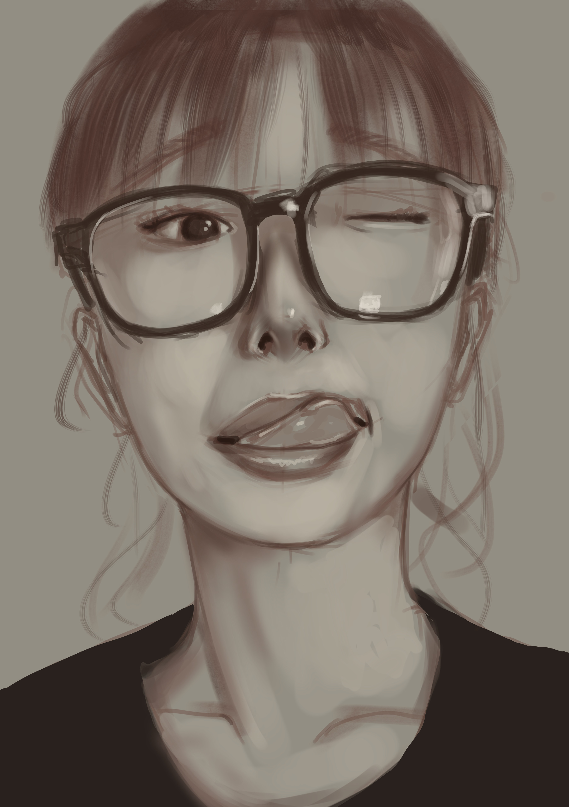
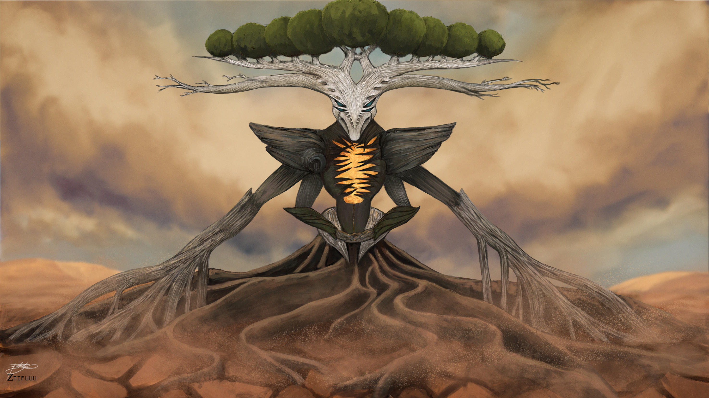
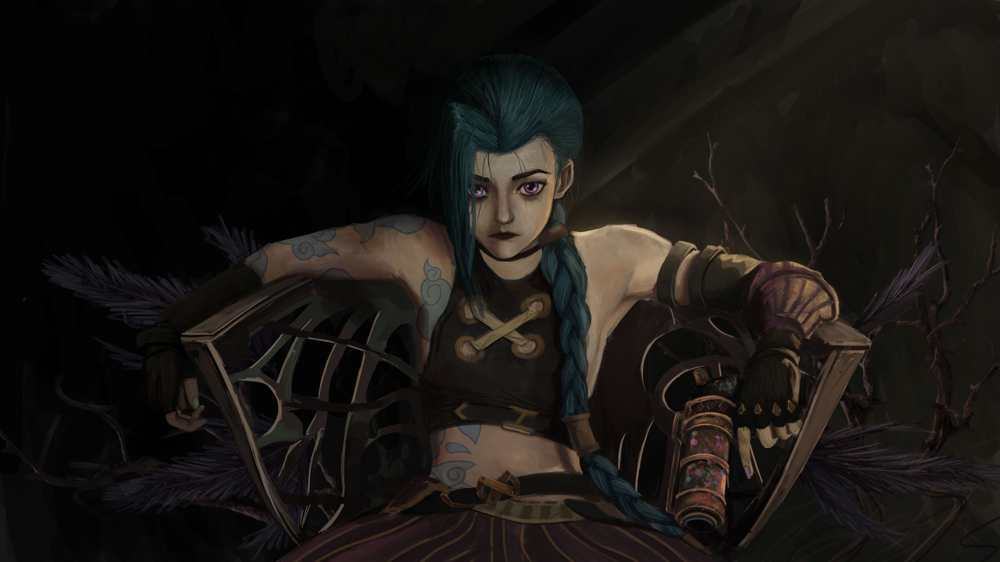

<section class="projects" id="projects">
  <h2>My Art Portfolio</h2>
  <div class="gallery">
    <!-- Gallery Items -->
    
    
    
    
    
    
    
    
    
    
    
    
    <!-- Add more images as needed -->
  </div>

  <!-- Modal for Expanded Image -->
  <div class="modal" id="image-modal">
    <span class="close">&times;</span>
    
    <div id="caption"></div>
  </div>
</section>
